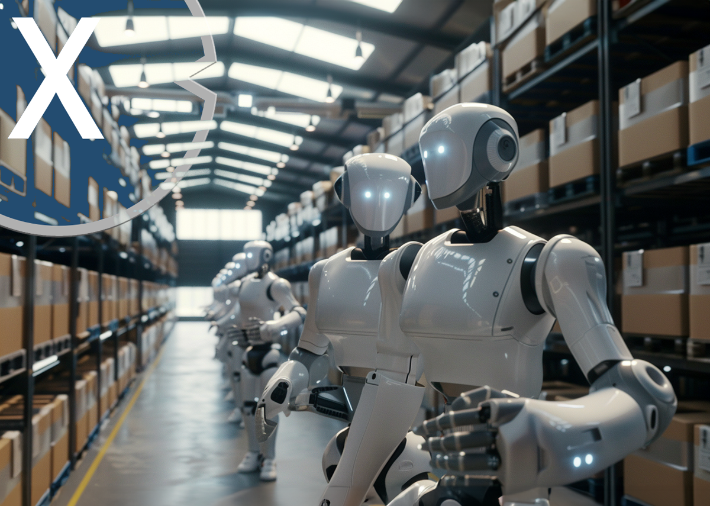

Looking ahead, the rise of advanced robotics, artificial intelligence, and machine learning promises a future where warehouses might operate with minimal human intervention. Autonomous vehicles, drones, and intelligent robots could manage end-to-end operations, from inventory replenishment to shipping. Automated systems can operate 24/7 without breaks, lowering staffing expenses. Robots can handle tasks faster and more consistently than human workers.Automated tracking and storage systems can reduce errors and optimize storage space. Robotics can help warehouses respond more quickly to changes in demand. Robotic systems can process and ship orders more quickly, improving customer experience. Real-time data from automation can provide better visibility into supply chain operations. Adaptable robotic systems can help warehouses respond to fluctuations in demand.
Autonomous Mobile Robot (AMR) VS Automated Guided Vehicles (AGV)
With AGV Robot and Autonomous mobile robots, you can apply material handling solutions that can move in all directions to your intralogistics and warehouselogistics processes, instead of conventional automated guided vehicles. AMRs are ideal for modern, fast-paced environments with evolving demands, while AGVs are better suited for structured tasks in stable facilities. The choice between them depends on the operational requirements, budget, and level of flexibility needed.
Autonomous Inventory Management
Autonomous inventory management refers to the use of advanced technologies, such as robotics, artificial intelligence (AI), and the Internet of Things (IoT), to streamline and automate the processes of tracking, replenishing, and managing inventory in warehouses or retail environments. These are robots that can scan, locate, and organize warehouse inventory with minimal human intervention.Tasks like restocking, sorting, and order picking are performed faster and more accurately than manual processes.
Robotic arms
Robotic arms are mechanical devices designed to replicate the movements and functionalities of a human arm. They are widely used in various industries, including manufacturing, healthcare, logistics, and warehousing, due to their precision, speed, and ability to perform repetitive tasks without fatigue.